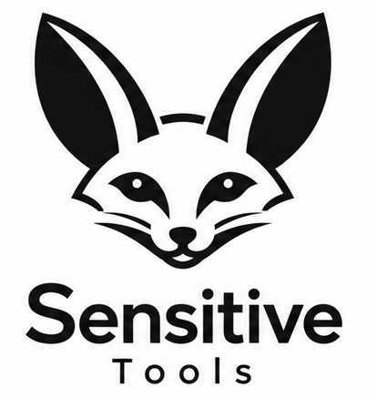

01
Detect
Identify nearby wireless activity and quickly see when a device or signal appears in your surroundings.

Sensitive Tools develops compact signal-detection technology designed to help you discover nearby wireless devices, understand where signals are coming from, and make better decisions in environments where awareness matters.
Identify nearby wireless activity and quickly see when a device or signal appears in your surroundings.
Use directional signal information to understand where a transmitter is located instead of relying on signal presence alone.
A portable, purpose-built tool for situational awareness, troubleshooting, diagnostics, field work and personal security.
We are building practical RF tools that turn complex radio-frequency information into something easy to understand and use. The goal is simple: give people a fast and intuitive way to detect, identify and locate wireless devices around them.